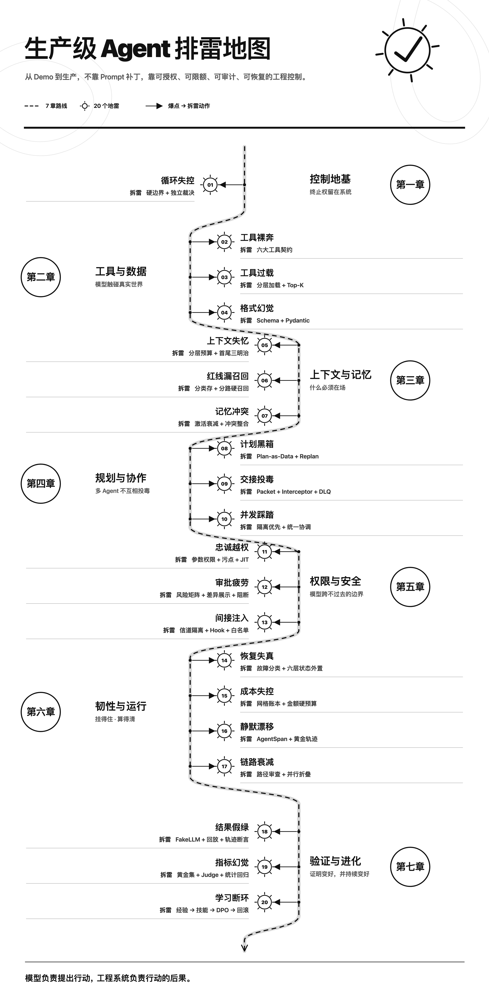

时长 11:26
时长 10:18
时长 09:02
时长 13:11
时长 13:49
时长 16:18
时长 13:26
时长 11:45
时长 12:12
时长 18:31
时长 13:48
时长 14:23
时长 08:49
时长 12:43
时长 14:32
时长 15:52
时长 16:35
时长 09:16
时长 16:19
时长 13:55
时长 16:31
时长 04:18
时长 29:21
时长 29:38
李号双，eBay 资深架构师，长期负责企业 AI 系统的架构设计与工程落地。他带领团队将 Agent 应用于研发运维、智能客服和数据分析等场景，持续处理系统从 Demo 走向生产时遇到的稳定性、安全与成本问题。在长期的一线实践中，他围绕 Agent 工程、RAG 架构、记忆管理、工具治理与成本风控积累了丰富的系统经验，是两项国际专利的第一发明人。
今天，搭建一个 Agent 已经不算难了。接入一个强模型，注册几个工具，再套上一层 Loop，它就能自己分析任务、调用工具、根据结果继续行动。哪怕系统只是封装了成熟模型或现成 AI 工具，也能很快做出一个让人眼前一亮的 Demo。
但只要把它放进真实业务，问题很快就会变：
这些问题不能简单归结为“模型不够强”。因为模型解决的是“会不会做”，生产系统还要回答另外一批问题：能不能执行、最多执行几次、什么时候必须停止、失败以后怎样恢复、出了事故如何追查。
模型负责提出行动，工程系统必须负责行动的后果。这就是《生产级 Agent 排雷实战》想解决的问题。
这门课不教你如何搭一个 Agent，也不把精力放在 Prompt 技巧上。讲师李号双（eBay 资深架构师）将基于近年来在研发运维、智能客服、数据分析等场景中落地 Agent 的一线经验，结合企业 AI 工程实践，系统拆解出 Agent 从 Demo 走向生产时绕不开的 20 个工程问题，帮你修复和加固已经跑起来的系统。
课程分为七章，沿 Agent 从输入、规划、工具执行到状态恢复、观测评估和持续学习的完整链路展开。

第一章 Loop 控制：用硬边界、独立裁决、状态机和检查点，把终止权与恢复权留在工程系统中。
第二章 工具契约：治理原子性、描述、幂等、错误语义与 Native Tool / MCP Server 的统一执行。
第三章 上下文与记忆：用分层预算、多路径召回、衰减和冲突检测，让关键约束始终在场、旧信息及时退场。
第四章 规划与多 Agent：把计划外化为可查看、可版本化、可恢复的任务图，并用 Handoff 契约隔离协作污染。
第五章 权限与安全：把权限下沉到参数和数据流，通过污点追踪、即时授权、独立熔断与 Guardrails 守住边界。
第六章 韧性与成本：区分故障类型，设计差异化重试与熔断，并通过状态外置、成本预算和轨迹观测定位静默失效。
第七章 测试与闭环：用 FakeLLM、轨迹断言、LLM-as-Judge、经验账本与技能沉淀，验证行为并形成持续改进。
每一讲遵循同一条实战链路：
你会先看到错误是怎么发生的，再判断问题出在哪里。之后给出生产级实现，并坦诚告诉你：这套方案解决了什么、没有解决什么、需要付出怎样的工程成本。
除了复现问题的代码，课程还配备了一套生产级的开源框架 ProdAgent。通过这套代码，你能真正“看见”Agent 在干什么，也能验证改造前后的行为差异。无论是个人学习还是团队 Code Review，都可以把这套代码直接带进工程讨论。
课程中的状态机、幂等、事件溯源、污点追踪、Guardrail 和轨迹测试，不绑定任何模型或框架。无论用 Python、Java、Go 还是 TypeScript，都可以直接迁移。